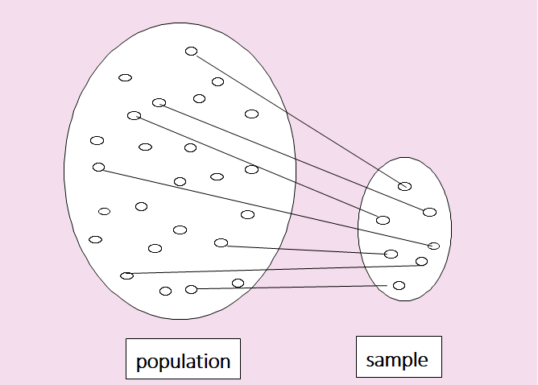

Statistics
This book is written for an introductory of Statistics and Data Science, focused on visualization and summary of data and traditional statistical methods by using a computer software 『eStat』.
All statistical methods are dealing with numbers or characters which is called a set of data. This set of data can be a whole set of data we are interested in or a part of data depending on a problem. If we make a decision using the whole set of data which we are interested in, the set of data is called a population. It is often very difficult or impossible to obtain the whole set of data in the population. In order to study characteristics of the population, if some number of data are extracted from the population, it is called a sample.

<Figure 1.2.1> Relationship between population and sample
Population and Sample
Population is a whole set of data which we are interested in.
Sample is some number of data extracted from the population.
There are two main fields where statistical methods are applied. The first field is an example of analyzing the population of a country such as gender, age, and occupation. In this case, we study how to effectively visualize and summarize data in order to understand the characteristics of the population better. These methods of visualizing and summarizing data are called descriptive statistics. The second field is how to infer characteristics of a population using a sample or how to test hypothesis on the population characteristics using a sample. These methods are called inferential statistics.
Descriptive Statistics and Inferential Statistics
Descriptive Statistics is a methods which visualizes and summarize a set of data in order to understand characteristics of data. The data can be either a population or a sample.
Inferential Statistics is a methos which infers characteristics of a population using the sample data or test hypothesis on the population characteristics using the sample data.
Example 1.2.1
The voting result for the 2016 United States Presidential Election are summarized as the following table. What field of statistics is this?
| Candidate |
Votes |
% |
Electral vote |
| Donald John Trump (Republican) |
62,984,828 |
46.09% |
304 |
| Hillary Diane Clinton (Democratic) |
65,853,514 |
48.18% |
227 |
| Gary Earl Johnson (Libertarian) |
4,489,341 |
3.28% |
0 |
| Jill Ellen Stein (Green) |
1,457,218 |
1.07% |
0 |
| David Evan McMullin (Independent) |
731,991 |
0.54% |
0 |
| Darrell Lane Castle (Constitution) |
203,090 |
0.15% |
0 |
| Gloria Estela La Riva (Socialism) |
74,401 |
0.05% |
0 |
Answer
This study is a descriptive statistics. It is a summary of the votes cast by U.S. voters in the 2016 presidential election. No inferences are made.
Example 1.2.2
The CNN poll was conducted from May 7, 2020 to May 10, 2020 for the 2020 United States Presidential Election by using a sample of 1001 registered voters. The result of poll was as follows. Margin of error = +/-4 percentage points.
What field of statistics is this?
| Candidate |
% |
| Donald John Trump (Republican) |
46% |
| Joe Biden (Democratic) |
51% |
Answer
This study is an inferential statistics. It is a summary of the CNN poll by using a sample of 1001 U.S. registered voters to predict the 2020 election.
In order to study the Data Science in depth, additional study for advanced theories in Statistics,
Mathematics and Computer Science are necessary. A computer software is essential for practicing
Data Science, but it is not easy to learn a high level statistical software which requires understanding
of a computer language. Authors have developed a web based software called 『eStat』 which has user
friendly interface especially for beginners. 『eStat』 also includes many useful dynamic graphical tools
for visualizing data and many simulation experiments to explain complicated statistical theories.
All theories of each chapter in this book can be practiced using 『eStat』.
Table 1.2.1 shows the composition of this book.
Table 1.2.1 Composition of this book
Chapter 1. Statistics and Data Science
|
|
Chapter 7. Testing Hypothesis for Single Population |
| | |
| Chapter 2. Data Visualization of Qualitative Data |
|
Chapter 8. Testing Hypothesis for Two Populations |
| | |
| Chapter 3. Data Visualization of Quantitative Data |
|
Chapter 9. Testing Hypothesis for Several Populations (ANOVA) |
| | |
| Chapter 4. Data Summary with Table and Measure |
|
Chapter 10. Nonparametric Testing Hypothesis |
| | |
| Chapter 5. Probability Distribution Model of Data |
|
Chapter 11. Testing Hypothesis for Categorical Data |
| | |
| Chapter 6. Sampling Distribution and Estimation |
|
Chapter 12. Correlation and Regression Analysis |
Chapters 2, 3, and 4 of this book discuss methods of the descriptive statistics. Chapter 2 discusses visualizations of Qualitative Data such as bar graph, pie chart, band chart, and line graph. Chapter 3 discusses visualizations of quantitative data such as histogram, stem and leaf plot, box plot, and scatter plot. Chapter 4 introduces methods of data summary by using tables and measures. Any middle school student or more are able to study these chapters
Chapters 5 to 12 of this book describe methods of the inferential statistics. Chapter 5 introduces concept of probability and the probability distribution models for both discrete and continuous data such as Binomial, Poisson, Hypergeometric and Normal distribution. Chapter 6 discusses relationship between sample and population, and explains the sampling distribution of the sample statistics. It introduces the estimation of the population parameters using the sampling distributions. These chapters are fundamentals for the inferential statistics.
Chapters 7 to 9 describe the parametric hypothesis tests for continuous data. Chapter 7 discusses the testing hypothesis for parameters of single population such as population mean, population variance and population proportion. Chapter 8 discusses the testing hypothesis for parameters of two populations such as two population means, two population variances and two population proportions. Chapter 9 discusses the testing hypothesis for parameters of several populations such as the analysis of variances.
Chapter 10 describes the nonparametric hypothesis test for continuous or ordinal data which includes tests for single location parameter, two location parameters and several location parameters. Chapter 11 describes the testing hypothesis for categorical data which includes the goodness of fit test and the independence test.
Chapter 12 describes the correlation analysis and the regression analysis of two continuous variables and then introduces the multiple regression model.
This book is intended to be used for a course of two semesters in introductory statistics and data science. In this case, Chapter 1 to Chapter 7 can be covered for the first semester and Chapter 8 to 9 for the second semester. If it is a single semester course of introductory statistics, it is recommended to study from Chapter 1 to Chapter 5, sections of 6.1, 6.2, 7.1, 8.1, 9.1, and then 12.1. 『eStat』 is so helpful for teaching/learning statistics, for example, students do not need to spend much time for studying the probability distributions as they do in the old textbooks by looking tables at the back. Therefore, students are able to study various statistical methods by using 『eStat』 within a single semester.